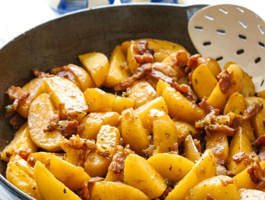

Potatoes Boulangere with Bacon - French Classic Recipe

Picture of Potatoes Boulangere with Bacon. Image can be found
here.
Ingredients
6 thick slices of bacon, cut into small strips
1 pound petite gold potatoes, peeled and quartered, or halved if
small
½ large onion, sliced very thinly
1½ chicken stock plus more if needed it
salt and pepper
1 teaspoon fresh thyme leaves
Instructions
Fry the bacon in a large skillet over medium heat, stirring
occasionally until the bacon becomes crisp and golden brown. Using a
slotted spoon transfer the bacon to a plate with a paper towel to
drain all the fat out. Leave the pan over the open heat source.
Add the onion to the hot pan and fry, stirring frequently, about 6
minutes, or until the onions are soft, translucent, and start to
turn golden.
Add the potatoes to the onions and fry, stirring occasionally for
about 5 minutes or until the potatoes start to become golden. Add
the drained bacon and the fresh thyme. Stir to blend.
Pour over the stock, it should barely cover the potatoes. Raise the
heat to bring to a small boil. Lower the heat and maintain a gentle
simmer. Season with salt and pepper.
Cook stirring occasionally for about 15 minutes or until the stock
has reduced and the potatoes are tender and glazed. Add more stock
if need be.
Taste and rectify the seasoning by adding more salt and pepper.